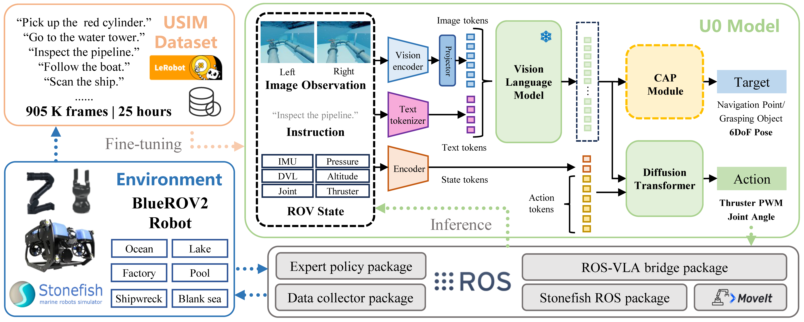

Abstract
Underwater environments pose challenges such as complex hydrodynamics, limited visibility, and constrained communication. To overcome the lack of large-scale data for multi-task autonomy, we present USIM, a simulation-based Vision-Language-Action dataset comprising 561K frames (15.6 hours) from 1,852 trajectories of BlueROV2 interactions across 20 tasks in 9 scenarios. Building on USIM, we propose U0, a multimodal VLA model that fuses binocular vision and sensor data with a convolution-attention perception module. U0 achieves 80% success across tasks including inspection, navigation, and tracking. In challenging mobile manipulation tasks, it reduces the distance to the target by 21.2% compared with baseline methods. Together, USIM and U0 establish a foundation for scalable underwater datasets and general-purpose robotic intelligence.
Method

Overall Framework. Diverse underwater scenarios and a BlueROV2 robot equipped with a manipulator and gripper are first constructed using the Stonefish simulator. Data collection and control are implemented via ROS, resulting in the USIM dataset of 561K frames (approximately 15.6 hours) covering 20 tasks. Based on USIM, U0 is developed with a dual-system architecture, incorporating multimodal sensor fusion and convolution-attention-based perception focus enhancement, while producing both target perception and robot action outputs.
Underwater Scenarios
BibTeX
@misc{gu2025usimu0visionlanguageactiondataset,
title={USIM and U0: A Vision-Language-Action Dataset and Model for General Underwater Robots},
author={Junwen Gu and Zhiheng wu and Pengxuan Si and Shuang Qiu and Yukai Feng and Luoyang Sun and Laien Luo and Lianyi Yu and Jian Wang and Zhengxing Wu},
year={2025},
eprint={2510.07869},
archivePrefix={arXiv},
primaryClass={cs.RO},
url={https://arxiv.org/abs/2510.07869},
}